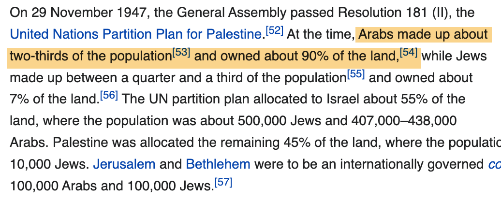
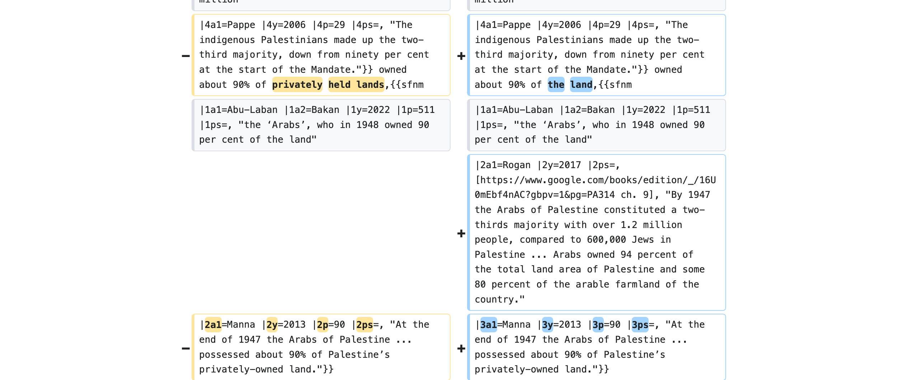
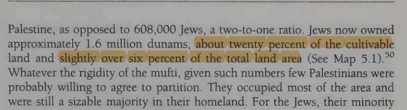
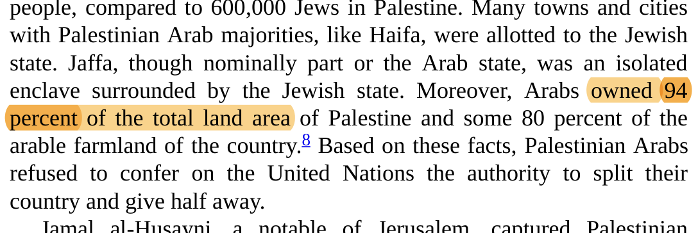
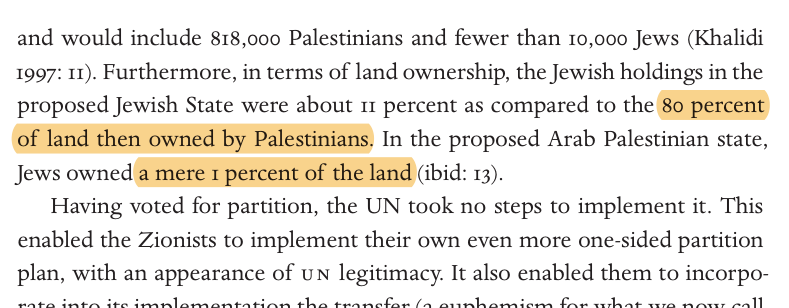

"Abu-Laban and Bakan say… 'owned' 90% of 'the land' (not 'private'). But Manna says… 'possessed'… 90% of 'privately-owned land.' …maybe it's better to just remove the 90% figure altogether." — the editor Levivich, on Talk:Nakba, December 2023 — four weeks before stripping the qualifier from the article and anchoring the figure to a total-land source.
This is the life of a single sentence. On the English Wikipedia's Nakba article, the line "Arabs… owned about 90% of the land" is stated in the encyclopedia's own voice and carries five stacked academic citations. It did not always read that way. Two years ago it carried four more words — "privately held lands" — that made it defensible. This page follows the edit trail by which those words were removed: who, when, in which revision, with what edit summary, and against what primary record. It is a worked case in the project's Wikipedia source-laundering thread — companion to the citation-provenance specimen. It does not adjudicate whether the 1947 partition was just; it audits one factual claim against its own cited evidence.
As it stands in the live article — in wikivoice, with a stack of five citations behind the bracketed [54].

en.wikipedia.org/wiki/Nakba · the figure has stood in this unqualified wikivoice form since 14 January 2024.
Reach: Wikimedia REST pageviews API (en.wikipedia, user traffic), monthly 2022-01 → 2026-06; peak month Oct 2023 = 728,841. Watchers: action=query&prop=info&inprop=watchers. Revisions: full prop=revisions pull, saved to the research repo.
On 14 January 2024, in two consecutive edits 51 minutes apart, the editor Levivich removed the denominator that framed the figure and then changed the figure's object — "privately held lands" → "the land" — while adding a source whose own wording is "94 percent of the total land area." Here is the second edit, as Wikipedia renders the diff:

Three moves in one edit: the qualifier "privately held lands" → "the land"; Rogan 2017's "94 percent of the total land area" inserted at citation slot 2; Manna's precise "privately-owned land" quote demoted to slot 3.
The two edit summaries, verbatim:
"ce sentence to match sources." The copy-edit made the sentence match the newly added source (Rogan's total-land figure) — not the source already in the stack that the editor had, weeks earlier, identified as the precise one (Manna's "privately-owned"). The denominator sentence removed first — "privately held lands amounted to approximately 25% of the total territory" — was the frame that told a reader what "90% of" was 90% of. With it gone and the qualifier gone, "90%" now reads against all of Palestine.
The distinction was not missed and then lost. It was argued out on the talk page — including by the editor who later removed it. Verbatim:
It equivocates state and vacant land… with Palestinian land… That is deliberately deceptive.Cites Village Statistics 1945: Arab-owned ≈ 29.5% nationally; the Negev ≈ 10.57M dunums of non-cultivable public land.
'owned by Palestinians' probably refers to 'land accessible to, and with user rights exercised by, Palestinians'— defending the figure by substituting usufruct for ownership; calls the partition
one of the great land swindles in history.
There is no way that Palestinian Arabs owned 90% of privately held lands, while Jews owned 25% of that same category.
Abu-Laban and Bakan say… 'owned' 90% of 'the land' (not 'private'). But Manna says… 'possessed'… 90% of 'privately-owned land.'Floated
maybe it's better to just remove the 90% figure altogether— then four weeks later removed the qualifier instead.
would definitely be misinformation; the combination of (Jewish private + state-held land) was around 80% in 1947.
Full verbatim threads preserved in the research repo (ninety-percent-arab-ownership-talk-evidence.md): Talk:Nakba/Archive 2 §5 (oldid 1190156988), Archive 3 §11 (oldid 1201506579).
No primary statistical source contains "90%" or "94%" as the Arab-owned figure. The Mandate Land Registry (Village Statistics 1945, compiled in Hadawi 1957) splits Palestine four ways — and "90%" is reached only by folding the 46% State Domain (mostly the never-surveyed Negev) into "Arab":
And the 47.79% itself is three evidentiary rungs of very different strength — only the top one is individual, alienable title. "Owned 90%" flattens all of it:
Among the five cited sources, only Manna 2013 keeps the load-bearing "privately-owned" qualifier — under which ~88.5% is defensible. Rogan's "94% of total area" is the arithmetic complement of Smith's "Jews ~6%" (100 − 6), eliding State Domain. The full five-citation provenance graph: the citation-provenance specimen →. Land data with full line-item derivation: The Law of the Land →.
The two cited pages, as printed. The arithmetic-complement error in one pair of book pages: Smith states only the Jewish ~6%; Rogan, citing Smith, writes "94 percent of the total land area" — the figure Wikipedia's strip-edit then anchored to.


Editing on this article is concentrated and contested. One editor made nearly a third of all 1,228 revisions; several of the most active were later sanctioned by Wikipedia's Arbitration Committee. (Sanction ≠ a judgment on any specific edit; the qualifier-strip itself was made by a prolific, unsanctioned editor.)
Top editors by revision count on Nakba (full history, n=1,228). Flags: Onceinawhile, Makeandtoss — indefinite topic-bans, ArbCom Palestine-Israel articles 5 (Jan 2025); Iskandar323 — site-ban (Jan 2026); Nishidani (who defended the figure on talk) — also indef. topic-banned in PIA5. The same forum that sanctioned several of these editors is the one whose own contributors (PresidentCoriolanus, Mistamystery, SJ, TFighterPilot) raised the substantive objection that was then overridden. The mechanism here is not a banned editor; it is a single qualifier-strip surviving unchallenged.
The same article carries a second land claim in wikivoice, sourced to Sa'di 2007: that inside the proposed Jewish state, "80% of the land… was already owned by Palestinians [and] 11% had a Jewish owner." It was challenged on talk in 2023 and survived. Here is the cited source, as printed:

The figure is explicitly framed to the proposed Jewish state (a partition-internal measure), and its "(ibid: 13)" points to Walid Khalidi's 1997 partition study — not to a national ownership figure.
Hadawi's own partition cross-tabulation (Table B(b), built from Village Statistics 1945) gives, inside the Jewish-state polygon:
11 + 80 = 91 implies only ~9% State Domain inside the polygon — impossible, since the Negev sat inside it (66%). The genuinely well-grounded fact the figure gestures at: Jews owned under 10% of the land in the state allotted to them (92.8% of all Jewish-owned land in Palestine fell inside that line). By privately-owned land the polygon is Arab ~71% · Jewish ~28%; by cultivable land the Jewish share rises toward parity. None of these is "11 vs 80." Full reconciliation in the research file ninety-percent-arab-ownership-audit.md, Addendum.